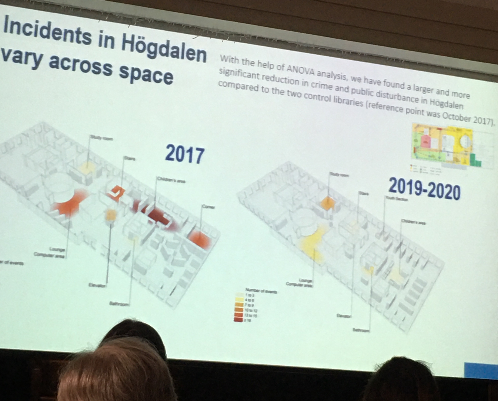
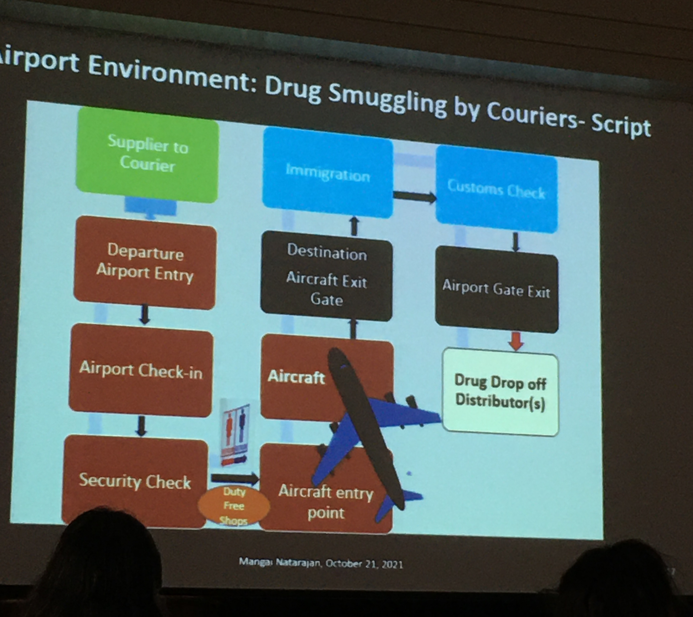
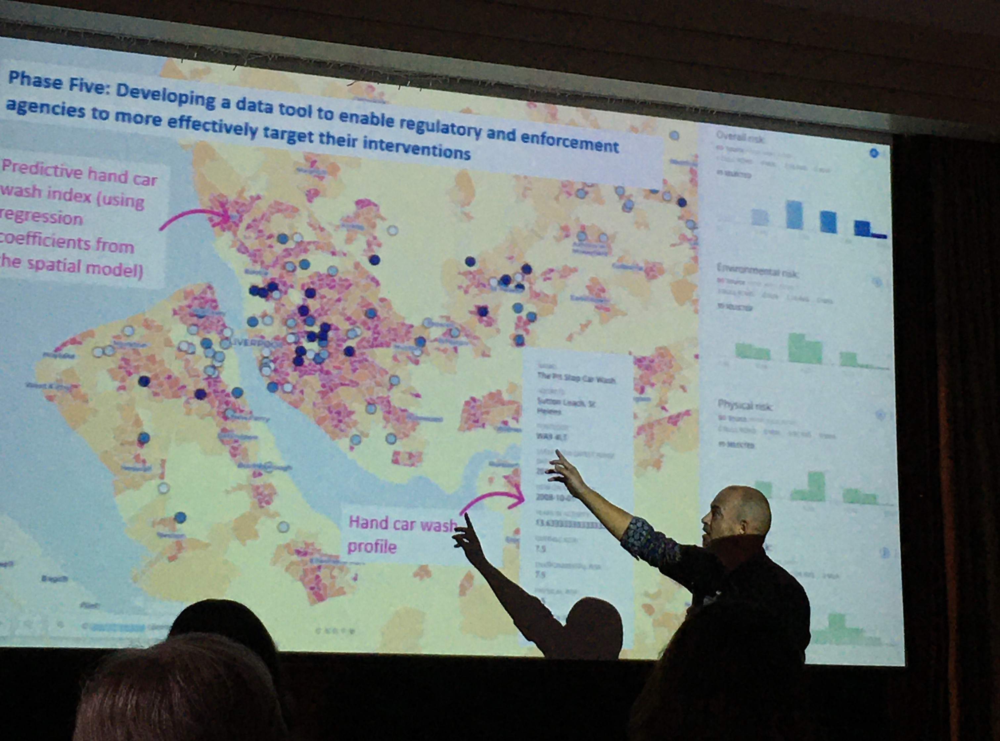
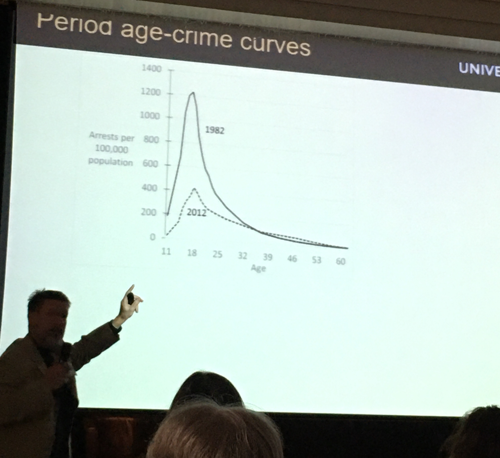
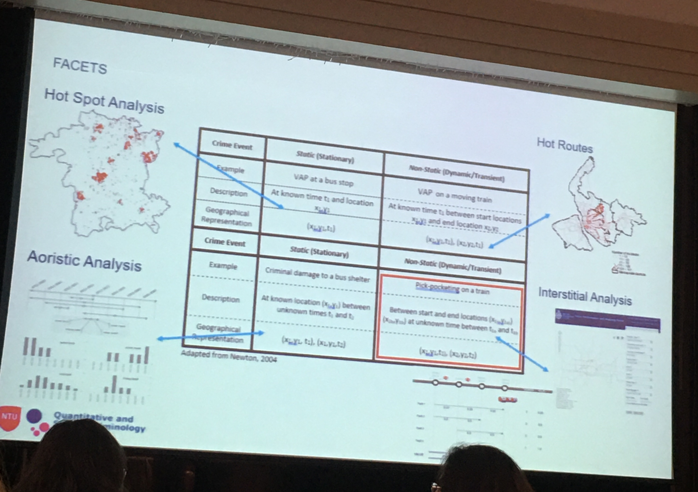
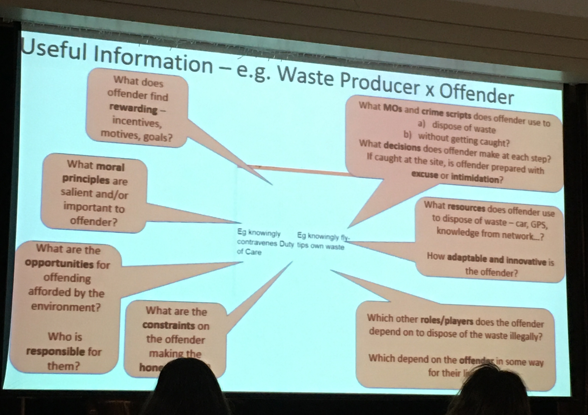
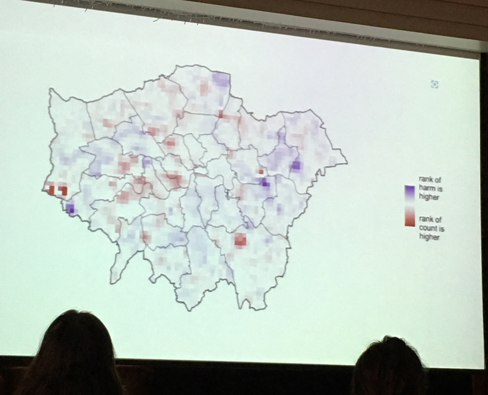

Last week I was in Harrogate, UK for the 30th Environmental Criminology and Crime Analysis (ECCA) meeting. I haven’t been to an in-person conference since ASC 2019. Usually to help me focus, I take notes, and the ASC notes (linked above) were appreciated by some, so I decided to type up also my ECCA notes. Here are some of my thoughts/ what I learned grouped them into some key themes for a summary. *(Disclaimer: these are my notes, possibly incorrect, please do find the speakers for any questions/detail/clarification and if you find I wrote something incorrect just tell me and I shall amend!) *
I grouped the talks into those about risky places, theory building, methodological advances, emerging crimes, policing, and covid + crime.
Risky places
Many of the talks discussed risky places for various crimes.
Vania Ceccato talked about crime in libraries, such as unpleasant/aggressive behaviour and theft. She described a conceptual model to investigate spatio-temporal nature of crime in libraries, and used 3D mapping in CAD software to think about micro environments and settings within the library and how these can promote or limit crime. For example the book supply area lends itself to theft, while the transition area (corridor/toilet) lends itself to alcohol/ drug abuse. She mapped these crime hotspots within the library based on fieldwork inspections and email reports from the libraries’ incident report system. She found the temporal patterns reflect routine activities of young people (who mostly use the library?) and what happens in the neighbourhood where the library is situated. In the Q&A Kate made the observation that there are more crimes more in the outside/entrance, and then less as you go into the library, and that Vania’s results show an “infiltration” into the library.

Mangai Natarajan focused on understanding drug trafficking via airports and applied ECCA techniques of risky facilities, crime places, crime script, crimes of specialised access, ESEER model. She analysed court transcripts of drug trafficking cases and looked at the fit with these approaches, for example modelling a J-curve of risky airports, or mapping a script and applying the ESEER (Easy, Safe, Excusable, Enticing, Rewarding) framework. Her results provide some insight into the role of airports in drug smuggling, and a development of some typologies, but she recommends a systematic safety audit to take this research forward.

James Hunter, Toby Davies, and Lucia Summers all discussed illegitimate businesses and their spatial concentrations. James Hunter focused on the UK, specifically car washes and nail bars which are involved with wage theft, modern slavery and human trafficking. His team used Google maps (62% of these businesses have presence on google maps/ other social media presence) and Google street view to identify these and then looked at what are features associated with location of these hand car washes e.g. visibility/attractiveness to customers, neighbourhood characteristics, etc. used POI database, census, etc to develop an informal economy index to identify where most likely those working in informal economy might be located. They developed this into a policy tool which makes predictive hand car wash index and brings up profile.

Toby and Lucia both looked at illegal massage businesses (IMBs) in the United States. Toby used betweenness estimates, measures of accessibility and permeability, and found that higher betweenness street segments are less likely, but higher local betweenness segments are more likely to host IMBs. In the Q&A John Eck suggested that rent prices might be something important to consider. Lucia went through reviews of these IMDs on an online platform and used this to try to develop a tool for law enforcement of a repository of sex trafficking signatures. She found that IMBs do not cluster as much as previous research suggests, and this might be due to her careful data cleaning which identified many duplicate venues, which seem to suggest that if one is shut down, it re-opens in the same place and same info (e.g. phone number). Again a question about landlords or to who the businesses are registered, but an issue is that they are registered to accountants who have many businesses registered to them, but are just the accountants.
Theory building
The first and last talk were both those that I think fit this bill. The conference opened with Shannon Linning discussing her new book written with John Eck: Whose ‘Eyes on the Street’ Control Crime?. Following a re-reading of Jane Jacobs, she presented 3 turning points: 1 - Primary source of informal ctrl should be place managers (as well as/ instead of residents?). 2 - Movement of people is manipulated by outsiders from neighbourhoods who build areas to fit their needs, so the movement of different resident types etc is more orchestrated by external people/companies than we’d think (e.g. by zoning, govt housing, building infrastructure, urban renewal, etc - creating population mobility through building transport infrastructure). 3 - Consider what is the most effective unit of analysis? - places - start at proprietary places, then build out form these (bottom up?) proprietary place > street > area
Another re-reading of books came from the presentation by Jason Roach, who delivered a very entertaining recap of psychology research from the lens of crime prevention, specifically considering influencing and nudges. Although revisiting old psychology textbooks is a bit risky (a few of the studies have since been discredited), he raised interesting points about incremental influence (which he also called nudge snooker) - the need to nudge people to a place where they can be better nudged, using the example of the 12-step programme of alcoholics anonymous to illustrate.
A critical reading of the Home Office’s Beating Crime Plan was delivered by Scott Keay standing in for Ken Pease which demonstrated that despite this being called “the most comprehensive, far-reaching strategy of its kind yet devised” by UK Prime Minister Boris Johnson, it was almost wholly bereft of a research underpinning. For example, it only included a small subset of the crime prevention initiatives shown to yield an overall reduction in crime according to the College of Policing’s Crime Reduction Toolkit (CRT) whose development the Home Office itself paid for. Beating Crime also included some approaches which CRT showed not to be associated with overall crime reduction. Scott ended with a call for action for criminologists, analysts, researchers, etc to: 1 - increase exposure to direct practice in their our areas of research, 2 - ongoing collaboration in crime reduction projects where the researcher has ‘skin in the game’ eg being associated with failures as with successes, 3 - write an evidence-based crime reduction strategy, on the lines of Norval Morris’ classic The Honest Politician’s Guide to Crime Control, published some fifty years ago. In the Q&A, where Scott’s own work was signposted, a point was raised that there is probably a difference between what analysts produce and what gets published and the filtering that it goes through is performed by the specialist advisers who are not experts and not elected. Therefore the much great work by analysts which does not make it to reports is not seen, and this is probably a large part of the problem.
Graham Farrell presented on a part of his large body of work on the international crime drop and the security hypothesis, looking at adolescent involvement and continuance in offending. His thesis is that as crime dropped, offender age increased over time - so age crime curve also shifted - most of the crime drop is accounted for by the change in the teens. In 40s there is more offending - these are the people who were in their teens in the 80s - so we’re looking at cohort effects. He referenced the “Debuts and legacies” 2015 paper with Nick Tilly and Gloria Laycock. In 2012 the offenders which started in their teens in the 80s are still offending because learned this in their teens when crime was easy. Thesis: Opportunities affect both adolescent-limited and persistent offending. In the Q&A someone raised whether it is possible that offending is the same but they are much better - so the data captures those who are caught. Because they grow up when committing crime is harder so they are better at it (when they do offend) and so they’re not in the UCR data because they’re not caught?

Then the conference closed with what was one of my favourite talks, Andy Newton presenting a Framework for Analysing Crime Events in Time and Space (of course there’s the acronym: FACETS). His thesis is that all key environmental crim theories talk about crime events - something which happens at a particular place and a particular time - but what is meant by place and crime? Questions to ask ourselves: what is temporal framework (how long does crime take/last?) and spatial framework (what is the extent of the place?). Building on dynamic/ static crimes, use this framework to think about different cases. Regarding how to think about time he suggested we revisit the work of Amos Hawley when we think about time, to think more about rhythm, tempo, and timing. Also to think about the denominator problem: if crime is dynamic then the denominator also has to be dynamic. He described also thinking around the 168 hour crime week and work using street sensor data as a dynamic denominator to measure this. Spatially he urged us to think of crime events using a fuzzy approach (eg bayesian approach) or think about the work of John Hipp on Egohoods. The Q&A had some interesting discussion around data quality with time element in that time recorded may not necessarily reflect when the crime happened. and whether to some degree are we talking about spatial and temporal measurement error? Or are you interested to understand the extent of the actual events? And also whether we should link sequences that might be 2 separate events? Like breaking into the house to get the key and then stealing the car - 2 events or 1 event?

Methods for crime analysis
I always learn a lot of neat methods stuff at ECCA, and sometimes the aim maybe isn’t methodological innovation but I tend to focus on that, so I may have some bias here… Anyway, this year, Kim Rossmo presented a method of Bayesian analysis for GIS in search optimisation. Specifically focusing on searches for missing persons in wilderness search and rescue. Presented the case study of Bill Ewasku a hiker who went missing in a large national park. His search was informed by his mobile phone which pinged on tower and narrowed search, but still deployed 100s of personnel, SAR teams, dogs, horses, helicopter etc - 1772 person-miles searched overall (they wear GPS trackers while searching). To help, Kim and team generated an optimal probability search map - combining 3 sources of information - range of cellphone tower, reception spots, and search radius. Bayes’ theorem provides a method for combining these different types of evidence to produce an optimal search strategy. This paper is actually published in the journal of search and rescue but recently the remains were found by hikers very closer to the peak area predicted, validating the probability map.
Sophie Curtis-Ham presented her PhD research on Lessons Learnt linking offenders’ mental maps for criminal spatial signatures. In her work she realised that police hold a lot of data about offenders’ activity spaces on top of their home locations. So she asked the question: when building geographic profile, should we prioritise those with activity notes near the crime location, OR does it matter the activity type? - which activity nodes are people more likely to commit crimes near? This model in her paper published in Crime Science. She also produced an R package R package: gpsmartr which allows anyone to implement this on their own data. In her testing she found that differentiating between activity nodes improves predictions compared to when just treating all activity nodes as the same (and even better than just considering home location). In the Q&A it emerged that this could be used for forecasting crime, and there is potential application in correctional setting for offenders what are their risky places for future offending, and putting offender management strategies in place for these locations.
Paul Ekblom and Herve Borrion both explored illegal waste dumping/ flytipping but from different methodologies. Paul Ekblom introduced the Crime Role Grid, a wider system mapping to identify and influence a diversity of stakeholders. He called it stakeholder mapping with crime layer. The idea is that you use it to collect and organise knowledge of agents in the system, anticipate the reaction of the various agents, design and develop resources. In this way crimes can be better understood from wider system-level view of agents, entities and causes. The crime role grid can be used with scripting, dependency mapping, or built into an interactive toolkit. Herve on the other hand was exploring an agent based modelling approach. He built an ABM to explore dynamics of fly tipping and hopes to build in crime prevention measures into ABM and calculate probability of different outcomes for each intervention which leads to getting caught (getting a fixed penalty notice). The point: with more granularity in simulation it is possible to recreate situational crime prevention framework that aligns with decision making model built for the offender in the ABM.

Wouter Steenbeek considered how we characterise near-repeat incidents using the Knox test, specifically how we define spatial and temporal ranges of interest. He argued that there is no clear definition for what is near repeat in the literature, there is no set definition for correct spatial and temporal bandwidth, or about the number of bands. To address this he presented the “Knox sloping-down index” (KSI), a scale from 0 to 1 which measures the intensity of your near-repeatedness. This measure showed how sensitive results are to choice of spatial and temporal bandwidth. Some questions to then consider: do we need to agree on bandwidth and bands to use KSI? Or do we need different measure (KSI is wrong) and so need different near repeat measure? In the Q&A it was suggested that if the aim is crime prevention, can this be understood as flexibility (depend on context) rather than vagueness? - so is it possible that KSI is a tool that best identifies where to target the intervention: find the place where KSI is best - and then use this to inform practice to reduce crime.
Wim Bernasco talked about spatial scale in crime location choice research in relation to crime location choice. What makes offenders choose a particular location to commit the crime? The answer is in the attributes of the particular location. Follow discrete choice models (utility maximisation) - these use individual data (not crime count). Common problem - not sure what unit of analysis is most appropriate. Issue of spatial scale has not really been addressed. Looked at 33 studies on crime location choice and collected unit of analysis, average size, number of units included and number of crime events included. Found larger units common, but more recent move to smaller units. Also carried out empirical data analysis to answer is there MAUP in crime location choice? Chenai snatching study - break down into grids (1500, 1000, 500m grids) instead of wards, to test MAUP. Found that differences are small but there is MAUP with the different size grids. There was then a question about whether this decision is hierarchical (ie you choose neighbourhood first then street then property) and if this can be integrated? - Wim suggested this can be a next step, possibly achieved with nested logit models to allow for looking at this.
Matt Ashby compared harm-spots and hot-spots. He raised the case when we cannot be crime-specific, for example to answer the question: which nhood team should we allocate more officers to? or Which district should we prioritise for extra funding?. In this case we want an overview,but of course, a hotspot map of “aLL cRiMe” is something quite useless, and if one of our crime mapping students were to produce this, we would not mark them favourably. So then what is the answer? One alternative approach is to weight crime based on some measure of harm (e.g. days in prison equivalent). Matt showed 2 KDEs, one is count of crime and one weighted by harm (so 1 weighted and unweighted KDE) and compared rank of each cell based on count and rank of each cell based on harm. Overall correlation between crime and harm is high but the correlation of where hotspots are is low - so mapping crime count means you miss areas of high harm. For example the low count high harm areas: 2 of these are prisons.

Finally, Jose Pina Sanches presented on the recounting crime project about measurement error in police recorded crime rates. We all know police data is flawed due to under reporting/ under detection. The question: how to define measurement error mechanism? - there will be systematic measurement error, negative, and multiplicative. What they did was compare victimisation survey and police data, then look at multiplicative error - plot along different equations, and see which one they are at. Since multiplicative looks best - this is how to define measurement error. Now can think about what measurement error is in models, then substitute measurement error term for the estimate. Then take log the multiplicative measurement error transforms into an additive error terms. This means that only intercept is biased - if you do this then the regression coefficient becomes entirely unbiased. To help others implement this, they created the rcme R package. As emerged in the Q&A the next step is to apply this to non-linear models.
Emerging crimes
There were a number of presentations about emerging crime types we need to better understand. For example, Ben and Amy Stickle presented their work about porch pirates. They note that between delivery and package retrieval is the most vulnerable time for parcel that is being delivered, and they analysed YouTube videos from doorbell cameras to find points for intervention. Their analysis identified multiple points for interventions (e.g. packages with a lithium battery warning essentially say “please steal me” and this should be covered up), and overall they advocate for security layering, making crime prevention approaches easy, and the need for collaboration from retailer, police, delivery people, and the consumer. In the Q&A it emerged that different companies have different levels of knowledge/understanding of this happening, and a possible future direction to interview offenders, as in the case of this crime type, the risk/reward/effort equation the reward is a gamble, which may have implication for who is offender/ their motivation/ etc.
There were a collection of “cyber” presentations. Marianne Junger discussed preventive strategies of victims to avoid fraud victimisation, asking people ‘what did they notice that wasn’t right that stopped them from losing money/ paying?’ for an online scam. Majority (67%) either recognised the fraud maybe because of the process (bank doesn’t send email like this) or because it was in media/news. 25% noted a mistake by fraud (like ‘i dont have children’ or ‘i dont use that bank’) and other reasons included private knowledge (e.g. my daughter would never ask for money, my boss doesn’t correspond in this way, etc), general distrust, or (my favourite) sticking to strong principles (e.g. ‘i never trust english speaking person i do not know personally’). There were also some near misses, where the person clicked the link but it was not working, or changed their login details just in time. Overall fraud crime prevention advice: knowledge about scams is important - but strategies should be different for different types of fraud. The Q&A pressed the methodology of asking for the most memorable fraud, and recall bias. Anita Lavorgna talked about harmful sharenting which apparently means oversharing of possibly sensitive information by parents or guardians about children/grandchildren/ this sort of thing. Asier Moneva presented on hackers’ “journey to crime” - defining travel to crime as achieving the task with the least effort. In the experiment, 70 software / IT security students were tasked to carry out some attack on a website and obtain the admin password. To operationalise efficiency, they collected keystroke data and built a cyber kill chain (like crime script for cyber crime) carrying out sequence analysis to produce hacking efficiency measure. Finally, Tom Meurs from Uni Twente explored how attackers using ransomware determine how much ransom to ask for, and found that the more effort was required for the attack and the yearly revenue of the target, the higher the ransom was, essentially: ransom is a function of effort and opportunity.
Policing and crime prevention
Philipp Dau looked at police presence and survival time of crime-free windows in cases of hotspot policing. He looked at reported crime in Belgium, and have GPS data from police vehicles (cars and motorbikes) which left ~46,000 policeable crimes (eliminated indoor crimes eg DV) 201 vehicles tracked - 127 call response units and 36 motorbikes. Survival curve of hotspots by time spent in the area, and separately considered all streets, hotspots, and hottest hot spots. For all streets shorter visit had longer survival time, but hotspot longer visit was better.
Sam Lantgon and Tim Verlaan presented their work looking at demand for emergency police services in the Netherlands. They were looking at 112 calls to inform staffing/ training/ safety wellbeing/ and answer what is scale and composition of demand in the Netherlands? And a technical point: how to measure this demand? Their study is also pre-registered here. After some recoding to harmonise Dutch categories with the American ones used by Jerry Ratcliffe in his paper. They find that 34% of calls were for crime, considering time on scene 40% were crime related. Health calls - while fewer (6%) take a long time (11%) and median time on scene is by far highest for health calls (75 min). They also looked at by number of units attending - ones with flocking (many units going to calls) denote the more serious incidents (this also explains high median time for time on scene for health e.g. where CPR required) Suggest there are 4 reasonable ways to calculate time - will use all 4 measures and see which one has impact.
Wildlife
There was also a session on wildlife crime. Andrew Lemieux presented work using SARA process to implement problem oriented wilderness protection to stop people from using ’elephant paths’ - unofficial trails that lead people into the conservation area (eg where deer have their babies). There are numerous problems: fence jumping, dog off lead, littering, elephant paths. Used strava data to show where people’s paths were - evidence of the unofficial movement beyond what landowner was seeing. Chose to focus on 2 elephant paths where people were accessing areas that needed protection. Intervention: signs to assist compliance, cover up trails, remove trail from open street map. Evaluation: people kept jumping fence. But where paths were closed down, people stopped using them, where it wasn’t, people continued to use. Q&A: “provocative counter measures” - vs when people don’t know they are being manipulated these can lead to more successful interventions.
Jen Mailley presented on her what works to reduce wildlife crime document for UNDOC. She asked: What is evidence base to decrease wildlife crime? At the moment - not super known. The evidence base currently is patchy, for example a systematic review paper by Dorothea Delpech ended up with only 5 studies that met criteria. But the next step is to build a conservation evidence database.
Finally, Sarah Gluszek from Fauna & Flora International - a conservation charity presented on situational crime prevention guidance for illegal wildlife trade. She with others (e.g. Julie Viollaz, who also being at UNDOC is working also with Jen on the project above) made a toolkit, translated into different languages, and simplified to make understandable to help implement crime prevention in these diverse settings.
Covid and crime
There were two covid+crime presentations, one about spatial variation in the impacts of covid on crime by Martin Andresen. He used structural break test for analytical methods, and found differential Moran’s I to identify local changes - specifically found an increase in criminal activity in the poorer areas.
The other paper was by Patricio Estevez who looked at covid + personal victimisation using Mexico’s crime survey. For methods, he used societal growth curves and focused on repeat victimisation, looking at incidence, prevalence and concentration. Overall found a reduction in incidents compared to the trend (counterfactual).
Posters
There were also some brilliant posters, but I did not take notes on them so I apologise for that one…
The end
Overall like always I learned so much and feel super inspired. I didn’t present this year but I hope that I will have something I’m proud of next year. I hope I didn’t misrepresent anyone’s work in these notes, but if yes, just email me to let me know!